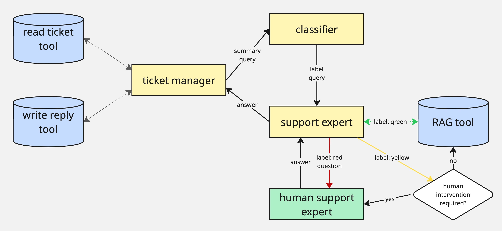

26.06. Pitch: Handling Customer Requests in a Multi-agent Environment¶
In the second pitch, the contractors will present their solution to automated handling of customer requests. The solution will have to introduce a multi-agent environment to take off working load from an imaginary support team. The solution will have to read and categorize tickets, generate replies and (in case of need) notify the human that their interference is required. I had Claude generate me infos about any mobile app, and it came up with a mobile fitness tracking app called FitTrack Pro so the thematic of the tickets will be revolving about that.
The initial idea to the architecture of this multi-agent system is the following:
There are 3 agents:
The ticket manager has access to a tool that reads the tickets from the pool and write the replies / closes the ticket
The classifier classifies the ticket information into 3 importance labels: green (unimportant), yellow (intermediate), or red (urgent)
The support expert has an access to the company internal information and can interrupt the workflow for the human input (human support expert)
Once a new ticket / a response for an old ticket comes, the ticket manager is triggered; it summarizes the infos from the ticket message history (if old) and forms a query to the classifier
Once the classifier receives the query, it classifies it and send further with the label to the support expert
Support expert has 3 options depending on the label:
If the label is green (unimportant), it retrieves the answer to this query itself
If the label is yellow (intermediate), it self-reflects if it can answer it itself (them the green scenario applies) or not (then the red scenario applies)
If the label is red (urgent), the support expert should interrupt the workflow to receive the input from the human expert; it then formulates the question for the human and generates its output based on the human input
Once the support expert generated its response (either itself or with the human input), it sends it back to the ticket manager
The customer manager then personalizes this reply (adds the customer name, makes it more polite and such) and sends it back using his reply tool.

Now once again, we will not add any actual integrations but rather simulate them, which the agent will not be aware of. All they will know is that these tools are provided and which scheme they conform to. The ticket retrieval and reply tools will be provided.
Obviously, in a real product, such automation process would run asynchronously and be triggered by the incoming message to the ticket pool. However, this functionality is not relevant for us, so we will once again simulate it and make it actually on premise . The way it will work is that we will run our system with zero input and it will simulate the trigger; then the ticket manager will force call its ticket retrieval tool, where all the relevant infos will be generated (50% as a new ticket and 50% as a continuation of an existing one), which will later be used in the pipeline. The ticket manager tools will implement the persistence functionality so you won’t have to implement any long-term memory.
As always, you don’t have to strictly follow this scheme, it is just a quick start suggestion for you, you may change it as you want.
Task¶
The project folder has the following structure:
The
resourcesfolder contains the single file: FAQs about the FitTrack Pro app generated with Claude. You will use it to make the RAG tools for the support expert.The
multi_agentfolder folder will store the implementation of your system.tools.pywill contain the tools for your agents. As mentioned, the tools for the ticket manager are given to you, and you will have to make only a simple RAG tool.prompts.pywill contain the prompts for your system. There is now a prompt for generation of incoming ticket messages (will simulate the real messages).agents.pywill implement the multi-agent system.
demo.ipynbwill showcase the capabilities and the limitations of the resulting system. It will take the initialized multi-agent systemmulti_agent/agents.pyand run it a few times.
Your task is to fill in the code in the provided boilerplates following the instructions below.
You may use any LLM and any orchestration framework you like.
You are free in your implementation as long as it follows the architectural constrains (implements a suggested or your version of a multi-agent system).
You don’t have to strictly follow the boilerplate, it is just a quick start suggestion; if you think it fits your solution better, feel free to remove/edit the suggested functions as well as add your. The only limitation you have here is that the solution should be written as Python scripts (not a notebook!), and it should be called from
demo.ipynb.
You don’t have to find a perfect solution, imagine you are building an initial baseline; this activity is more about detecting the limitations and vulnerabilities of your own work and suggesting the ways to improve. Most importantly, you have to be able to explain your design choices and justify them for this particular use case.
Steps¶
Setup¶
Download the project folder.
Go through the usual setup routine to setup your environment for the project. Put the resulting
requirements.txtfile with the dependencies in the project folder.
RAG Tool in multi_agent/tools.py¶
RAG Tool (
rag())
Write a simple RAG tool.
You may use the most simple loading and chunking tools, the focus is not on RAG in this project; you might consider using
langchain.tools.retriever.create_retriever_tool. Even if the RAG quality will be bad, don’t try hard to improve it.Return a list of retrieved
Documentobjects.
Prompts in multi_agent/prompts.py¶
Here, you will be adding the prompts you will find required for your implementation.
Multi-agent System in multi_agent/agents.py¶
Complete the SupportLaMA class as follows:
Initialization (
__init__())
Initialize your LLM.
Initialize the agents.
Replace the placeholder for the keyword arguments (
**kwargs) with specific parameters that you need to initialize the agent (or none, if none is needed), and adjust theinit_rag_agent()arguments accordingly.
Invoke the Ticket Manager (
ticket_manager_node())
If called with a new ticket message, use the
read_last_tickettool to get the latest ticket and summarize the conversation to form a query for the classifier.If called with an answer from the support expert, personalize the reply, use
send_reply_to_ticketto respond, and decide whether to close the ticket.
Invoke the Classifier (
classify())
Use the classifier agent to assign an importance label (
green,yellow, orred) to the query and return it.
Invoke the Support Expert Agent (
support_expert_node())
For
green, answer using the RAG tool.For
yellow, decide if the agent can answer directly (if yes, proceed as green; if not, escalate as red).For
red, prepare a question for the human expert and handle the response accordingly.Return the next step and the corresponding AI message.
Define Whether to Ask Human (
human_intervention_required())
Analyze the query content and return
Trueif human input is needed, otherwiseFalse.
Ask Human (
ask_human_expert())
Simulate asking the human expert for input and return their answer wrapped as an
AIMessage.
Agent Run (
run())
Route the query through the classification step and call the appropriate answering method based on the result.
Ensure the transparent output: reasoning steps, predicted query class, decision about human intervention etc.
Additional notes:
If you will be using
LangGraphas the orchestration framework, create a state scheme and replace thequery,labeletc. parameters in the function to thestateparameter.Build the routing logic in a separate function according to your framework (e.g. specify edges and nodes for
LangGraph).Once again, you may add/edit anything you want as long as it creates a multi-agent system.
Demonstration in demo.ipynb¶
Define the parameter values you need for instantiating the SupportLaMA class from multi_agent/agents.py and initialize it. Run the agent a few times – it is supposed to always start with reading the last ticket message – it will generate the simulated ticket infos for the pipeline.
Deliverables & Logistics¶
Prepare slides that would present your solution to the “company board” (your fellow students). The slides should highlight the design decisions step by step (agent initialization, multi-agent pipeline etc.), explain the choices of the LLMs etc., so basically justify why you implemented the system the way you did. It should then inspect the outputs of the system in detail and provide a qualitative analysis of those. Finally, it should discuss the current limitations and possible workarounds.
With these slides, you will hold a presentation (30-40 min). After that, you have to be ready to answer the questions from the board.
Put the complete code and the slides to a GitHub repository. It may be private if you want, then you will have to send an invitation for the username
maxschmaltz. The submission succeeds via email, and the deadline is June 26, 12pm. Note: if you will put the files to the repo manually, don’t forget to exclude environment variables, dependencies etc.